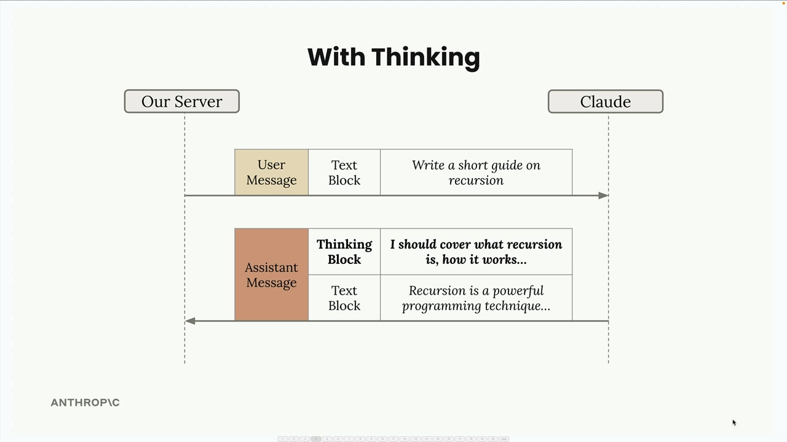
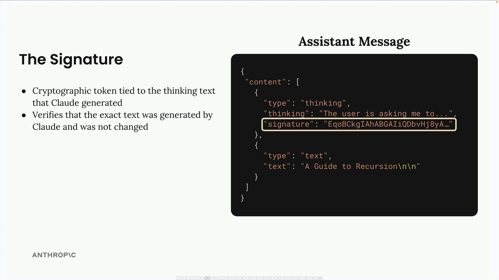
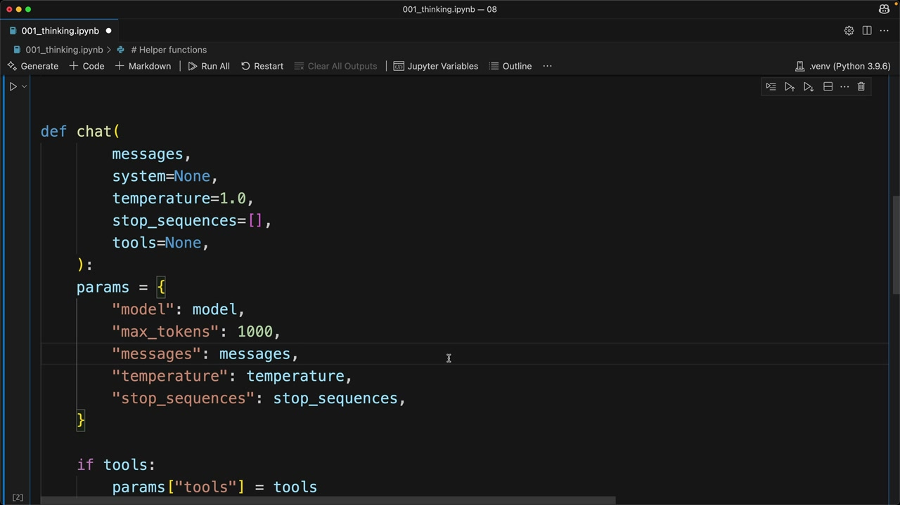

확장된 사고
중요 안내: 확장된 사고는 일부 기능(특히 메시지 사전 입력 및 temperature 설정)과 호환되지 않습니다. 전체 제한 사항 목록은 아래 링크를 참고하세요: https://docs.anthropic.com/en/docs/build-with-claude/extended-thinking#feature-compatibility
확장된 사고(Extended Thinking)는 Claude의 고급 추론 기능으로, 최종 응답을 생성하기 전에 복잡한 문제를 차근차근 풀어나갈 시간을 모델에게 제공합니다. Claude의 "메모지" 같은 역할을 한다고 생각하면 됩니다. 답에 이르기까지의 추론 과정을 볼 수 있어 투명성이 높아지고, 결과적으로 더 좋은 품질의 응답을 얻는 경우가 많습니다.
확장된 사고의 작동 방식
확장된 사고가 활성화되면 Claude의 응답은 단순한 텍스트 블록에서 두 부분으로 구성된 구조화된 응답으로 변경됩니다:

사고 기능이 활성화되면 추론 과정과 최종 답변을 모두 얻을 수 있습니다:

주요 이점은 다음과 같습니다:
- 복잡한 작업에 대한 향상된 추론 능력
- 어려운 문제에서의 정확도 향상
- Claude의 사고 과정에 대한 투명성 확보
그러나 중요한 트레이드오프도 있습니다:
- 비용 증가 (사고 토큰에 대한 비용 발생)
- 지연 시간 증가 (사고 처리에 시간 소요)
- 코드에서 더 복잡한 응답 처리 필요
확장된 사고를 사용해야 할 때
결정 방법은 간단합니다: 프롬프트 평가를 활용하세요. 먼저 사고 기능 없이 프롬프트를 실행하고, 프롬프트를 충분히 최적화했음에도 정확도가 요구 사항을 충족하지 못한다면 확장된 사고 활성화를 고려하세요. 표준 프롬프팅으로는 원하는 결과를 얻기 어려울 때 사용하는 도구입니다.
응답 구조와 보안
확장된 사고 응답에는 보안을 위한 특별한 서명 시스템이 포함됩니다:
서명은 사고 텍스트가 수정되지 않았음을 보장하는 암호화 토큰입니다. 이를 통해 개발자가 Claude의 추론 과정을 변조하는 것을 방지하며, 변조 시 모델이 안전하지 않은 방향으로 유도될 수 있습니다.
삭제된 사고 블록
경우에 따라 읽을 수 있는 추론 텍스트 대신 삭제된 사고 블록을 받을 수 있습니다:

이는 Claude의 사고 과정이 내부 안전 시스템에 의해 플래그 처리될 때 발생합니다. 삭제된 내용은 암호화된 형태로 실제 사고를 담고 있으며, 이를 통해 향후 대화에서 컨텍스트 손실 없이 전체 메시지를 Claude에 다시 전달할 수 있습니다.
구현
코드에서 확장된 사고를 활성화하려면 chat 함수에 두 가지 매개변수를 추가해야 합니다:
def chat(
messages,
system=None,
temperature=1.0,
stop_sequences=[],
tools=None,
thinking=False,
thinking_budget=1024
):
사고 예산(thinking budget)은 Claude가 추론에 사용할 수 있는 최대 토큰 수를 설정합니다. 최솟값은 1024 토큰이며, max_tokens 매개변수는 반드시 사고 예산보다 커야 합니다.
API 매개변수에 사고 구성을 추가하세요:
if thinking:
params["thinking"] = {
"type": "enabled",
"budget": thinking_budget
}그런 다음 사고 기능을 활성화하여 호출하세요:
chat(messages, thinking=True)삭제된 응답 테스트
테스트 목적으로, 특별한 트리거 문자열을 전송하여 Claude가 삭제된 사고 블록을 반환하도록 강제할 수 있습니다. 이를 통해 애플리케이션이 삭제된 응답을 오류 없이 올바르게 처리하는지 확인할 수 있습니다.
확장된 사고는 Claude가 복잡한 추론 작업을 수행해야 할 때 강력한 기능이지만, 비용과 지연 시간의 영향을 감안하여 신중하게 사용해야 합니다. 먼저 표준 프롬프팅으로 시작하여 충분히 최적화한 후, 추가적인 추론 능력이 필요할 때 사고 기능을 추가하세요.